域名解析系统
@DNS- 名称服务器 DNS - Domain Name System
- 是互联网的一项服务
- 负责将域名解析为对应的IP地址，以便 更方便（好记/好维护） 地访问互联网
- 使用 UDP 协议；协议端口：53
- 存放位置
操作系统缓存
浏览器/应用程序缓存
路由器 / 本地 DNS 服务器缓存
静态映射表（唯一写在硬盘文件里的特例）C:\Windows\System32\drivers\etc\hosts；手动配置；优先级最高；系统只读
- 域名 Domain
- 域名是互联网上用于唯一标识主机或网络服务的层次化逻辑名称
- 域名属于 逻辑标识，不反映物理位置或网络拓扑
- 由标号 (label) 序列组成，各标号之间用点（.）隔开，各标号分别代表不同级别的域名
- 每个标号不超过 63 字符
- 标号不区分大小写
- 总长度不超过 255 个字符
- 域名的作用
定位服务：通过 DNS 解析为 IP 地址，实现对服务器的访问
组织标识：体现机构属性（如 .edu 表示教育，.gov 表示政府）
服务划分：通过子域名区分 Web、邮件、数据库等不同功能
品牌建设：作为机构在互联网上的身份标识
- 如果使用IP地址访问，则略过DNS
- 查看本地缓存（浏览器自身缓存和操作系统缓存）
- 查看本地主机文件
- 客户主机向运营商 ISP 指定的 DNS 服务器发起查询
- DNS 服务器优先查询自己的缓存；如果没有命中 Cache Miss，则代替客户主机向各级 DNS 服务器迭代查询
- DNS 服务器将查询结果IP地址返回给请求主机；同时缓存记录
- 主机使用IP地址访问WWW服务器；同时缓存记录
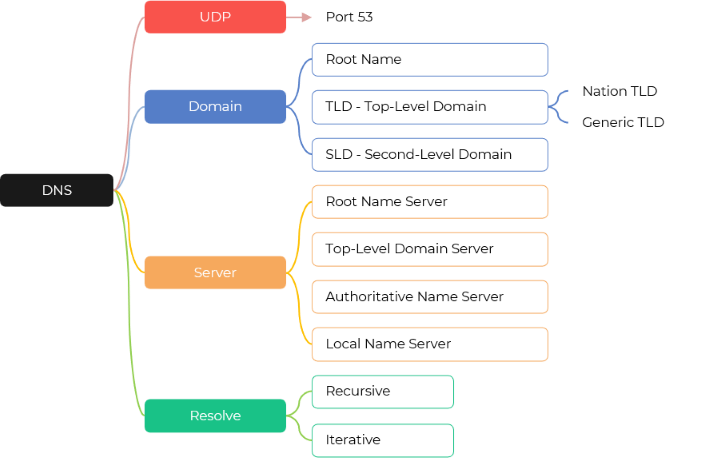
翻译官、通信录
变长的域名适合人记忆使用
定长的IP地址使用机器使用
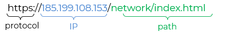
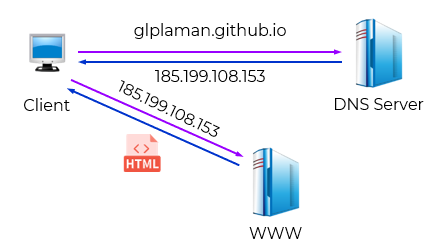
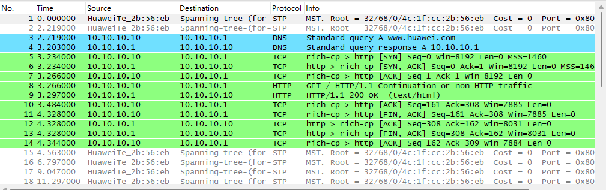
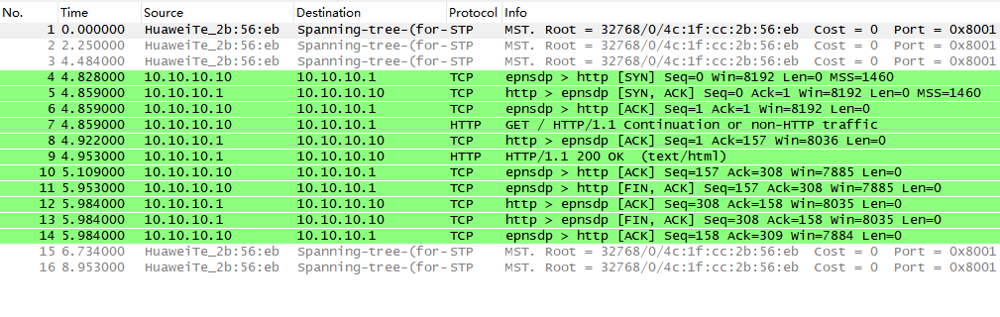
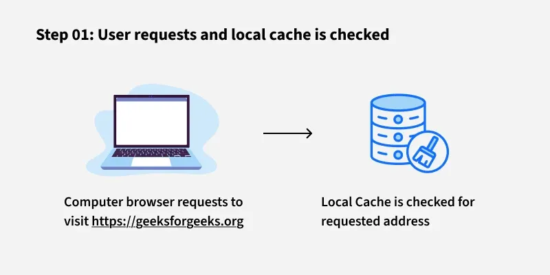
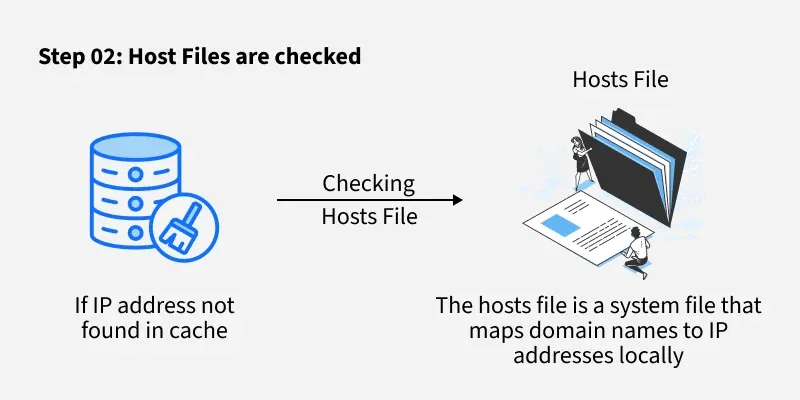
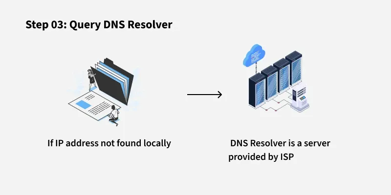
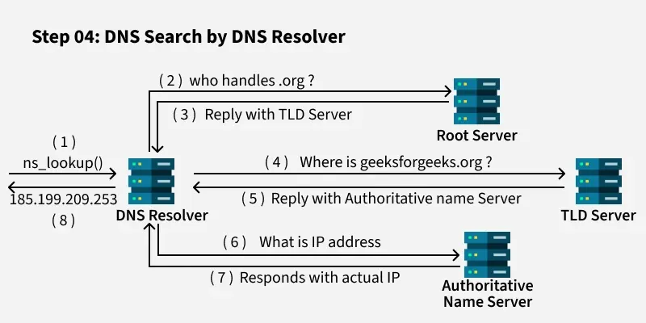
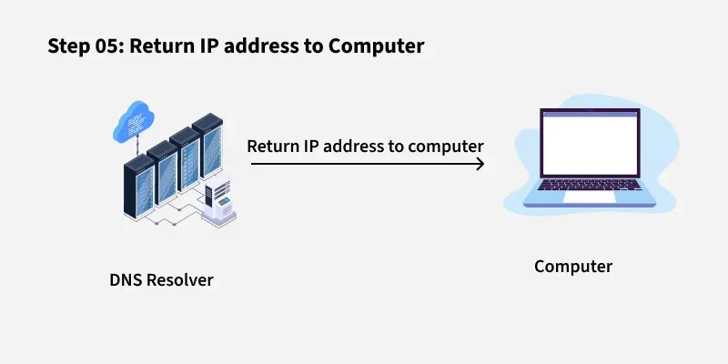
域名 Domain Name
- 根域名 Root Domain
- 域名系统的最顶层，用一个空标签（null label）表示
- 在 DNS 协议中以 .（点）结尾标识
- 系统为用户做了兼容，域名末尾的 根域名 . 一般不需要输入
- DNS 解析为
- 所有域名最终都归属到根
- 根由全球 13 组根服务器维护
- 顶级域名 TLD - Top Lever Domain
- 顶级域名是根域名下的第一级，分为以下几类
- 面向全球开放注册（部分有限制）
- 由 ICANN 统一协调管理
- 由各国或地区互联网管理机构负责运营
- 顶级域名只有一个，即arpa，用于反向域名解析，因此又称反向域名
- 不面向公众注册，仅由 IETF 和 DNS 系统内部使用
- 二级域名 SLD - Second-Level Domain
- 二级域名位于顶级域名之下，其命名规则由各国或 TLD 管理机构自行制定
- 我国域名中心 CNNIC - China Internet Network Information Center
- 以中国 .cn 为例
- 采用两位拼音缩写，覆盖省、自治区、直辖市、特别行政区
- 大树小站 glplaman.github.io
- 华立学院 www.hualixy.edu.cn

baidu.com
baidu.com.
1. 通用顶级域名 gTLD - Generic TLD
| 代码 | 含义 |
|---|---|
| .com | 公司 |
| .net | 网络服务机构 |
| .org | 非盈利机构 |
| .gov | 政府部门 |
| .mil | 军事部门 |
| .edu | 教育机构 |
2. 国家顶级域名 nTLD - nation TLD
| 代码 | 国家 |
|---|---|
| .cn | 中国 |
| .us | 美国 |
| .uk | 英国 |
| .jp | 日本 |
| .de | 德国 |
3. 基础结构域名
| 代码 | 适用 |
|---|---|
| .ac.cn | 科研机构 |
| .com.cn | 工商金融企业 |
| .net.cn | 网络服务机构ISP |
| .org.cn | 非盈利机构 |
| .gov.cn | 政府部门 |
| .mil.cn | 军事部门 |
| .edu.cn | 教育机构 |
| 代码 | 地区 |
|---|---|
| .bj.cn | 北京 |
| .js.cn | 江苏 |
| .sh.cn | 上海 |
| .gd.cn | 广东 |
| .hk.cn | 香港 |
| .tw.cn | 台湾 |
| 三级域名 | 二级域名 | 顶级域名 | 根域名 |
|---|---|---|---|
| glplaman | github | io | . |
| huali | edu | cn | . |
www 只是一个历史遗留的约定俗成的子域名，最初用于标识万维网服务 WWW - World Wide Web
现在很多网站已经不再强制使用 www，比如你可以直接访问 https://baidu.com 而不是 www.baidu.com
如果确定层级，应根据它在具体域名中的层级位置
域名服务器 Server
- 根域名服务器 Root Name Server
- 共13个域名；区域不均衡
- 截至 2026年，
全球共有 2047 个根服务器实例（即物理部署点）在运行
中国境内（包括中国大陆、香港、澳门、台湾地区）共部署了 约 50 个根服务器实例
内地约有 30–35 个，覆盖北京、上海、广州、杭州、武汉、西安等多个城市
- 知道所有顶级域名服务器的域名和对应的IP地址
- 不直接解析 IP地址，而是告诉对方应该找哪个顶级域名服务器
- 顶级域名服务器 Top-Level Domain Server
- 负责管理在该顶级域名服务器注册的所有二级域名
- 收到 DNS 查询请求时，就给出相应的权威域名服务器的IP地址
- 它总是知道去哪里找权威域名服务器
- 权威域名服务器 Authoritative Name Server
- 负责一个区 zone 的域名服务
- 每台主机都必须在授权域名服务器处登记
- 实际上，许多域名服务器都同时充当本地域名服务器和授权域名服务器
- 授权域名服务器 总能 将其管辖的主机名转换为该主机的IP地址
- 不在辖区的，向上级请求
- 本地域名服务器 Local Name Server
- 本地域名服务器对域名系统非常重要
- 也称默认域名服务器； 距离用户较近
- 每个因特网服务提供者ISP， 或一所大学，甚至一所大学中的各个系，都可以拥有一个本地域名服务器
- 当一台主机发出DNS查询请求时，这个查询请求报文就发送给该主机的本地域名服务器
- 如果查不到，再去询问其他的域名服务器
| 分类 | IP | 域名 | 运营 |
|---|---|---|---|
| A 根 | 198.41.0.4 | A.root-servers.net | 美国加利福尼亚州洛杉矶 |
| B 根 | 192.228.79.201 | B.root-servers.net | 美国弗吉尼亚州马里兰 |
| C 根 | 192.33.4.12 | C.root-servers.net | 美国纽约州纽约市 |
| D 根 | 199.7.91.13 | D.root-servers.net | 美国新泽西州贝德明斯特 |
| E 根 | 192.203.230.10 | E.root-servers.net | 瑞典斯德哥尔摩 |
| F 根 | 192.5.5.241 | F.root-servers.net | 美国加利福尼亚州棕榈泉 |
| G 根 | 192.112.36.4 | G.root-servers.net | 荷兰阿姆斯特丹 |
| H 根 | 198.97.190.53 | H.root-servers.net | 美国华盛顿州西雅图 |
| I 根 | 192.36.148.17 | I.root-servers.net | 瑞士日内瓦 |
| J 根 | 192.58.128.30 | J.root-servers.net | 日本东京 |
| K 根 | 193.0.14.129 | K.root-servers.net | 美国密歇根州兰辛 |
| L 根 | 199.7.83.42 | L.root-servers.net | 美国加利福尼亚州埃尔塞贡多 |
| M 根 | 202.12.27.33 | M.root-servers.net | 美国弗吉尼亚州达勒姆 |
根服务器 → 返回 TLD 服务器地址
TLD 服务器 → 返回权威域名服务器地址
权威域名服务器 → 返回域名对应的IP
域名解析 Resolution
- 域名解析融合了递归查询 Recursive Query 和迭代查询 Iterative Query
- 客户端 ↔ 本地 DNS 解析器：使用递归查询
- 本地 DNS 解析器 ↔ 上游 DNS 服务器：使用迭代查询
- 只有客户端（如用户主机）可以向支持递归的 DNS 服务器（如本地 DNS）发起递归查询
- 根服务器、TLD 服务器、权威服务器一律 不支持 递归查询
- 基本过程 Procedure
- 以 www.example.com 为例
- Client → Local DNS（递归查询）
问：请帮我查 www.example.com 的 IP，必须给我最终结果
- Local DNS → Root Server
问：.com 顶级域（TLD）服务器的地址是多少
答：返回 .com 对应的 TLD 服务器地址（IP 或域名）
- Local DNS → TLD Server
问：example.com 的权威域名服务器（Authoritative Server）是多少
答：返回 example.com 的权威服务器地址（IP 或域名）
- Local DNS → Authoritative Server
问：www.example.com 的 IP 地址是多少
答：返回该域名真实的最终 IP
- Authoritative → Local DNS → Client
本地 DNS 将获取到的 IP 结果缓存（根据 TTL），随后将最终结果返回给客户端
- 完整过程 Details
- 假定某客户机想获知域名为 http://www.abc.com 主机的 IP 地址
- 当用户在地址栏键入并敲下回车键之后，域名解析就开始了
- 检查浏览器缓存
- 检查操作系统 DNS 缓存
- 检查本地 hosts 文件
- 若均无记录，则向本地 DNS 服务器发起 递归查询
本地 DNS 服务器优先检查自身缓存；若未命中，则代替主机向外部发起「迭代查询」
若未命中，则代替主机向外部发起迭代查询，依次向根服务器、顶级域服务器、授权服务器查询
向根服务器查询，获取顶级域（TLD）服务器地址
向顶级域服务器查询，获取权威服务器地址
向权威服务器查询，获取最终的 IP 地址
- 本地 DNS 服务器将最终 IP 返回给客户端，同时将记录存入自身缓存
- 浏览器/操作系统将该 IP 存入本地缓存，并使用该 IP 与目标服务器建立连接
- 说明 Notation
- 部分资料提到使用 8 个UDP报文
- 简化版描述
- 前提是从根开始一步步查询
每一步都只用一个请求 - 响应来回
无重试
无多服务器轮询
- DNS 安全 Security
- 钓鱼网站的本质是“伪造身份”
- 黑客会建立一个和真实网站（如银行、电商）长得一模一样的假网站，诱导你输入账号密码
- 靠“身份验证”机制
- 钓鱼网站无法获得受信任的证书（或者证书域名对不上）。浏览器会弹出“您的连接不是私密连接”等红色警告
- DNS 劫持（DNS Hijacking）
- DNS 污染（DNS Cache Poisoning / DNS Spoofing）
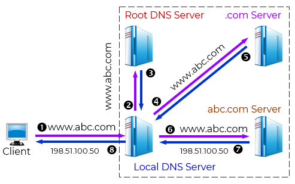
常用命令 Command
- ipconfig /displaydns
- 查看主机 DNS 缓存
- 显示的是"缓存内容"，不是"查询过程"
- ipconfig /flushdns
- 清空主机 DNS 缓存
telemetry.individual.githubcopilot.com ---------------------------------------- 记录名称. . . . . . . : telemetry.individual.githubcopilot.com 记录类型. . . . . . . : 5 生存时间. . . . . . . : 30 数据长度. . . . . . . : 8 部分. . . . . . . . . : 答案 CNAME 记录 . . . . . : copilot-telemetry-service.githubusercontent.com 记录名称. . . . . . . : copilot-telemetry-service.githubusercontent.com 记录类型. . . . . . . : 5 生存时间. . . . . . . : 30 数据长度. . . . . . . : 8 部分. . . . . . . . . : 答案 CNAME 记录 . . . . . : glb-db52c2cf8be544.github.com 记录名称. . . . . . . : glb-db52c2cf8be544.github.com 记录类型. . . . . . . : 1 生存时间. . . . . . . : 30 数据长度. . . . . . . : 4 部分. . . . . . . . . : 答案 A (主机)记录 . . . . : 140.82.114.22
Summary & Homework
- Summary
- 统一资源定位 URL
- 域名 Domain
- 解析 Resolution
- Homework
- Reading
A：可分为：根域名服务器、顶级域名服务器、权威域名服务器和本地域名服务器
B：根域名服务器并不解析域名，而是把待查域名对应的顶级域名服务器的IP地址作为结果返回
C：除根域名服务器外，其它域名服务器均能返回待查域名对应的IP地址
D：本地域名服务器的IP地址应该直接配置在需要解析域名的主机中
A：根域名服务器
B：顶级域名服务器（TLD）
C：权威域名服务器
D：本地域名服务器
A：根域名服务器
B：.com 顶级域名服务器
C：用户配置的本地域名服务器
D：example.com 的权威域名服务器
A：服务器必须返回最终答案，否则继续代为查询
B：服务器若不知道答案，会返回一个“知道该去问谁”的服务器地址
C：客户端直接向根服务器发起查询
D：所有查询都通过 TCP 完成
A：0、3
B：1、3
C：0、4
D：1、4
A：一条、一条
B：一条、多条
C：多条、一条
D：多条、多条
Chrome：chrome://net-internals/#dns
Edge：edge://net-internals/#dns
# Copyright (c) 1993-2009 Microsoft Corp. # # This is a sample HOSTS file used by Microsoft TCP/IP for Windows. # # This file contains the mappings of IP addresses to host names. Each # entry should be kept on an individual line. The IP address should # be placed in the first column followed by the corresponding host name. # The IP address and the host name should be separated by at least one # space. # # Additionally, comments (such as these) may be inserted on individual # lines or following the machine name denoted by a '#' symbol. # # For example: # # 102.54.94.97 rhino.acme.com # source server # 38.25.63.10 x.acme.com # x client host # localhost name resolution is handled within DNS itself. # 127.0.0.1 localhost # ::1 localhost
DNS is a hierarchical and distributed naming system that translates domain names into IP addresses. When you type a domain name like "www.geeksforgeeks.org" into your browser, DNS ensures that the request reaches the correct server by resolving the domain to its corresponding IP address.
Without DNS, we’d have to remember the numerical IP address of every website we want to visit, which is highly impractical.
User Input: You enter a website address (for example, www.geeksforgeeks.org) into your web browser.
Local Cache Check: Your browser first checks its local cache to see if it has recently looked up the domain. If it finds the corresponding IP address, it uses that directly without querying external servers.
DNS Resolver Query: If the IP address isn’t in the local cache, your computer sends a request to a DNS resolver. The resolver is typically provided by your Internet Service Provider (ISP) or your network settings.
Root DNS Server: The resolver sends the request to a root DNS server. The root server doesn’t know the exact IP address for www.geeksforgeeks.org but knows which Top-Level Domain (TLD) server to query based on the domain’s extension (e.g., .org).
TLD Server: The TLD server for .org directs the resolver to the authoritative DNS server for geeksforgeeks.org.
Authoritative DNS Server: This server holds the actual DNS records for geeksforgeeks.org, including the IP address of the website’s server. It sends this IP address back to the resolver.
Final Response: The DNS resolver sends the IP address to your computer, allowing it to connect to the website’s server and load the page.
Root DNS Servers: These are the highest-level DNS servers and know where to find the TLD servers. They are crucial for directing DNS queries to the correct locations.
TLD Servers: These servers manage domain extensions like .com, .org, .net, .edu, .gov and others. They help route queries to the authoritative DNS servers for specific domains.
Authoritative DNS Servers: These are the servers that store the actual DNS records for domain names. They are responsible for providing the correct IP addresses that allow users to reach websites.